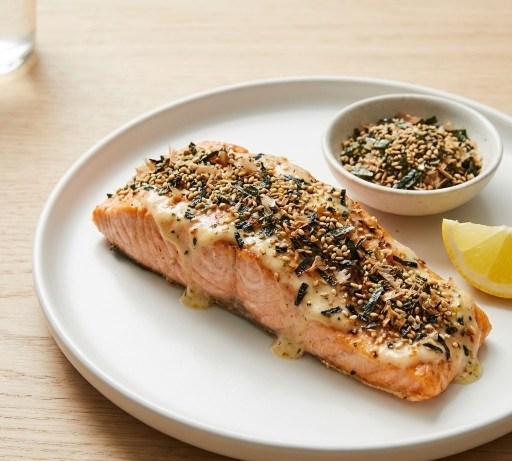

Homepage
4 Ingredient Furikake Salmon

Description
This elegant & simple 4 ingredient Salmon fillet can be done within 15 minutes and provide a nutritious meal!
Ingredients
- 1 pound salmon fillets.
- Salt and freshly fround black pepper, to taste.
- 2 tablespoons Kewpie mayonnaise.
- 2 tablespoons Sriracha, or to taste.
- 2 tablespoons of furikake seasoning.
Step by step
- Gather all ingredients. Preheat the oven to 375°F (190°C).
- Pat salmon filets dry; sprinkle with salt and pepper. Stir kewpie mayonnaise and sriracha together in a small bowl; brush liberally over salmon. Sprinkle furikake over the salmon.
- Bake in the preheated oven until fish flakes easily with a fork, about 20 minutes.
- Serve immediately.